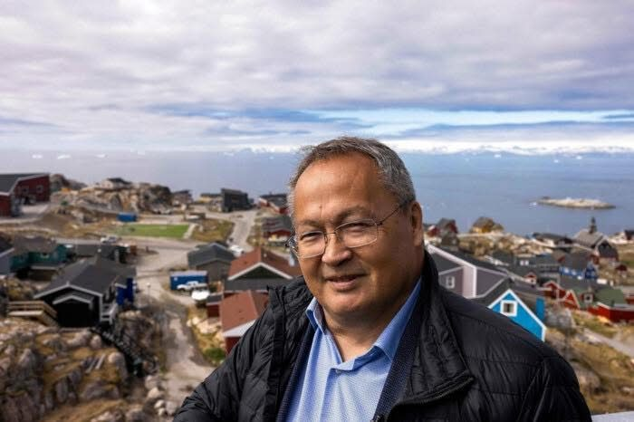
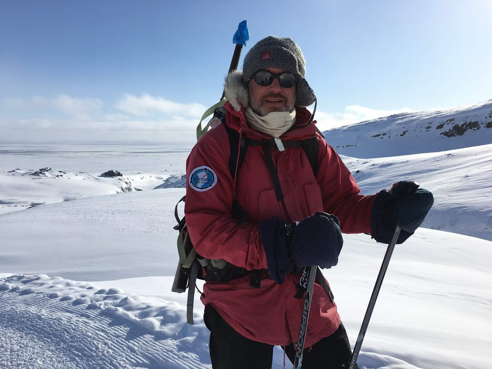

The people behind the science
Ilulissat Science Service is built by two people who know this place from very different angles — a community leader who has helped shape Ilulissat for three decades, and a climate scientist who has studied its ice for two.

Palle Jerimiassen · IlulissatCommunity & local logistics
Co-founder · Former Mayor of Avannaata Kommunia · Founder, Event Ilulissat
A co-founder of Ilulissat Science Service, Palle brings deep local roots and a lifetime of navigating the Arctic landscape to every project. His approach to field logistics and support is built on professionalism, safety, and a profound respect for the extreme environment in which the team operates.
His career in public leadership — eight years as Mayor and thirty years on the municipal council — means he is used to managing complex processes and keeping a clear overview, whether the task is logistics for a scientific expedition, a film production, or an exclusive professional visit. That experience is paired with the practical skills the Arctic demands: a certified skipper for 12-passenger operations, holding LRC/ROC radio certificates, and a seasoned Arctic outfitter equally at home in ice-filled waters and at remote field camps.
Palle believes the best results come from strong partnerships and local anchoring. The goal at Ilulissat Science Service is not simply to provide a service, but to act as your extended arm in the field — so you can focus entirely on your mission, be it research, communication, or documentation. Alongside this work he runs Event Ilulissat, delivering authentic, high-end professional experiences.

Kerim Hestnes Nisancioglu · Bergen and IlulissatScience & research
Co-founder · Professor of Climate Dynamics, University of Bergen · Bjerknes Centre for Climate Research
Kerim is a climate scientist who has spent more than two decades studying the dynamics of the Arctic — past, present, and future — with a particular focus on the Greenland Ice Sheet and the fast-flowing glaciers of Disko Bay, including Sermeq Kujalleq at Ilulissat. He earned his PhD at MIT and as a Professor at the University of Bergen has exensive teaching and field experience.
He led ice2ice, one of the largest European climate research projects in the Nordic countries, connecting changes in Arctic sea ice to the stability of Greenland's ice. He founded ILLU Science and Art in Ilulissat, and works deliberately at the meeting point of science, art, and education — bringing climate knowledge out of the lab and into the local communities.
Two worlds, one place
Together we connect international Arctic research with the people, knowledge, and infrastructure of Ilulissat — so that science done here strengthens both our understanding of a changing planet and the community at the ice edge.
Plan your research ← Back to About